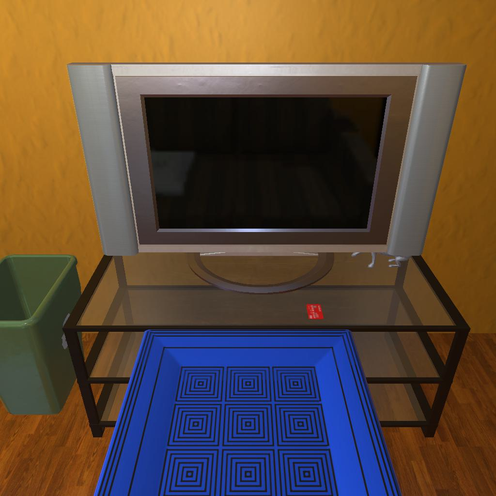

---------------------------------------------------------task: 3---------------------------------------------------------
--------------------------------------------------------------------------------------------------------------------------------------------------------------------
--------------------------------------------------------------------------------------------------------------------------------------------------------------------
Step:--------------------------------------------------------------------------19-------------------------------------------------------------------------------
----------------------------------------
VLM Prompt:
Image1:
Image2:
**Instruction**
1. Analyze the provided images to identify all visible household objects and compare the difference between images (e.h. whether the object is opened or not and taken on hand or not), focusing on those relevant to the task description "examine the plate with the floorlamp."
2. Use the analysis of images and the task hint "The agent must find an object of the desired type, locate and turn on a light source with the desired object in-hand." to answer the question: what is the most reasonable action in the choices for the task description "examine the plate with the floorlamp"?
3. Decide and write the answer using the template: The answer is: (i): , where i is the real number. If there is no desired object in images, search every place based on **Initial Observation** to find the object. And if no one is exactly correct, choose a similar answer.
**Initial Observation**
You are in the middle of a room. Looking quickly around you, you can see armchair (1), garbagecan (1), tvstand (1), shelf (1-5), sofa (1), coffeetable (1), sidetable (1-2), drawer (1)
**Answer Choices**
(1): go to armchair 1
(2): go to garbagecan 1
(3): go to tvstand 1
(4): go to sofa 1
(5): go to sidetable 1
(6): go to sidetable 2
(7): go to drawer 1
(8): go to shelf 3
(9): go to shelf 4
(10): go to shelf 5
(11): put plate 2 in/on shelf 2
(12): examine plate 2
(13): examine shelf 2
**Answer**
Let's think step by step by following the instructions.
----------------------------------------
----------------------------------------
Original Response:
First, we analyze the provided images for visible household objects and differences between the images. In Image 1, we see a sofa with a cushion and a book on it, a floor lamp next to it, a side table with nothing on it, and a blue plate on the coffee table. In Image 2, we see a TV on a TV stand, a garbage can, and the same blue plate on the coffee table.
Based on the task description "examine the plate with the floorlamp," we need to identify the plate and the floor lamp. The floor lamp is visible in Image 1, and the blue plate is visible on the coffee table in both Image 1 and Image 2.
Using the task hint, "The agent must find an object of the desired type, locate and turn on a light source with the desired object in-hand," we must find the plate and then turn on the floor lamp.
The most reasonable action from the answer choices related to the task description is to go to the coffee table where the plate is located and then examine the plate with the floor lamp nearby. Since there is no specific action to go to the coffee table and the plate is not mentioned in the answer choices, we must select an action that involves the plate.
However, the answer choices do not include any action that directly states picking up or examining the plate on the coffee table. The closest action is (12): examine plate 2, but since there is no "plate 2" mentioned in the initial observation or visible in the images, this option does not seem correct. Moreover, the action to examine a plate should be preceded by picking it up, and none of the choices reflect that sequence.
Since no choice exactly matches the necessary actions for the task, we must choose a similar answer. The closest option that involves interacting with a plate is (12): examine plate 2.
So, the answer is: (12): examine plate 2, with the understanding that this action assumes the agent has already picked up the plate from the coffee table, even though the action to do so is not explicitly mentioned in the answer choices.
----------------------------------------
----------------------------------------
>>> Refine Original VLM Response and Get Pure Action: No action
----------------------------------------
-----------------------------------------------------------------
Running time: 33.55986571311951 seconds
Total Money: 1.1837400000000005
-----------------------------------------------------------------
-----------------------------------------------------------------
Text Observation:Nothing happens.
-----------------------------------------------------------------
UNSUCCEED